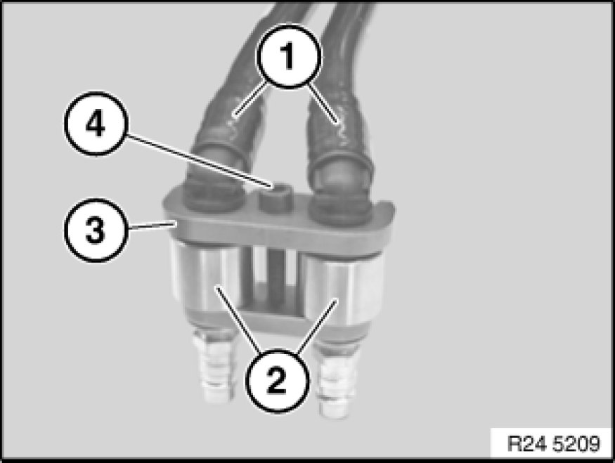
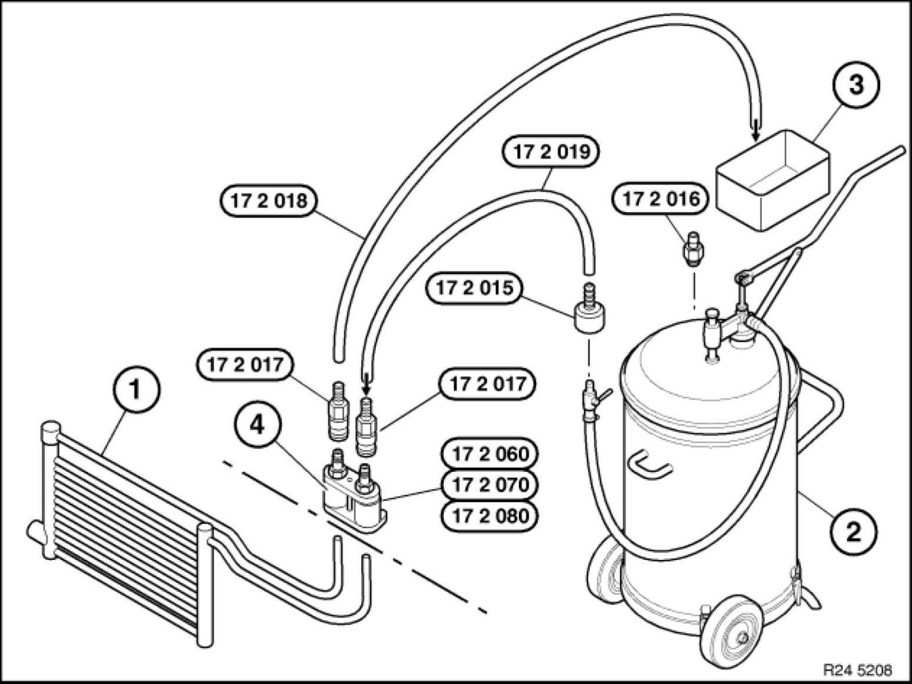
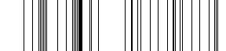
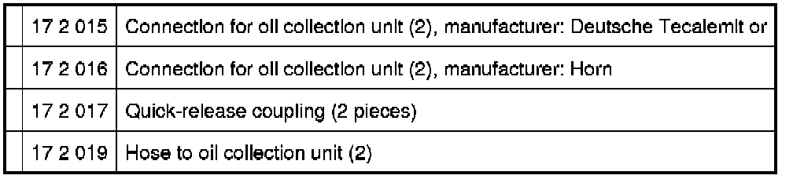
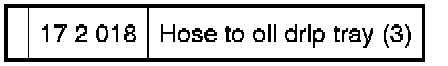
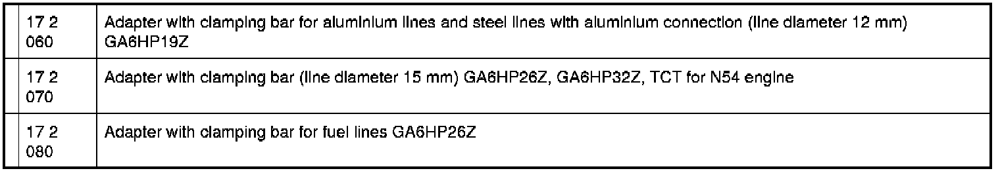

Flushing Transmission Oil Cooler with Lines (Automatic Transmission) (GA6HP19Z,
17 21 500 - Flushing transmission oil cooler with lines (automatic transmission) (GA6HP19Z, GAHP26Z, GA6HP32Z)

Special tools required:
- 17 2 018 17 2 010 Set of Adapters
- 17 2 019 17 2 010 Set of Adapters

Note:
Carry out the work steps listed when:
Installing a new or replacement transmission.
Procedure:
Automatic transmission removed.
Connect appropriate adapters (see description below) to oil lines exiting from automatic transmission.
Connect connecting line 17 2 019 17 2 010 Set of Adapters from the oil collection unit with the quick-release coupling.
Connect drain line 17 2 018 17 2 010 Set of Adapters using quick-release coupling.
Hold and direct open end of drain line into a suitable drip tray.
Using oil collection unit, flush approx. 1 liter of transmission fluid (refer to BMW Service Operating Fluids) through oil lines and transmission oil cooler.
Reposition quick-release couplings.
Flush oil lines/transmission oil cooler in opposite direction with approx. 1 liter of transmission fluid (refer to BMW Service Operating Fluids).
Disconnect quick-release couplings.
Remove adapter.
Note:
Dispose of flushing oil correctly.
Do not reuse under any circumstances.

Press hydraulic lines (1) into adapters (2).
Slide clamping bar (3) into guides and secure with screw (4).
Arrangement of flushing apparatus for transmissions GA6HP19Z, GA6HP26Z, GA6HP32Z




